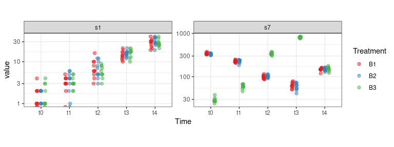
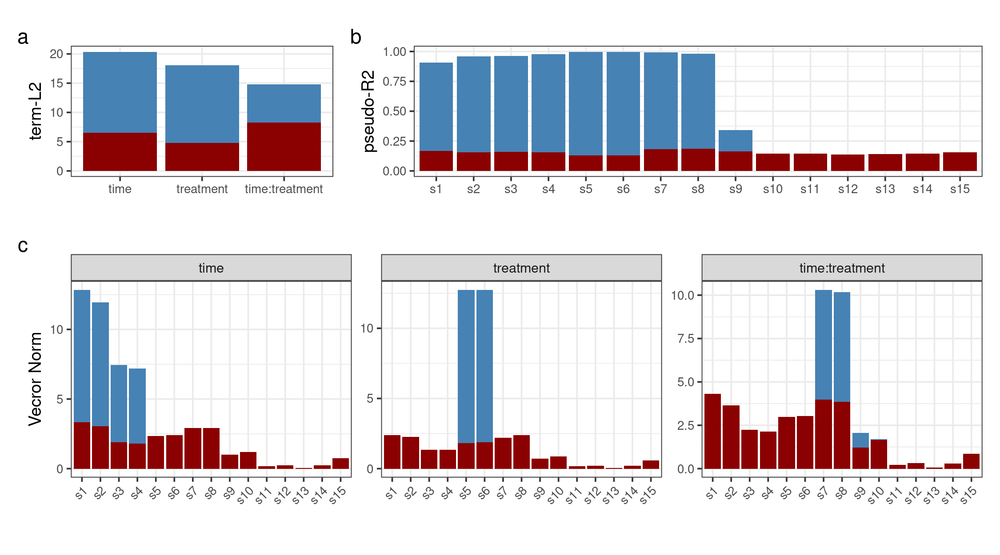
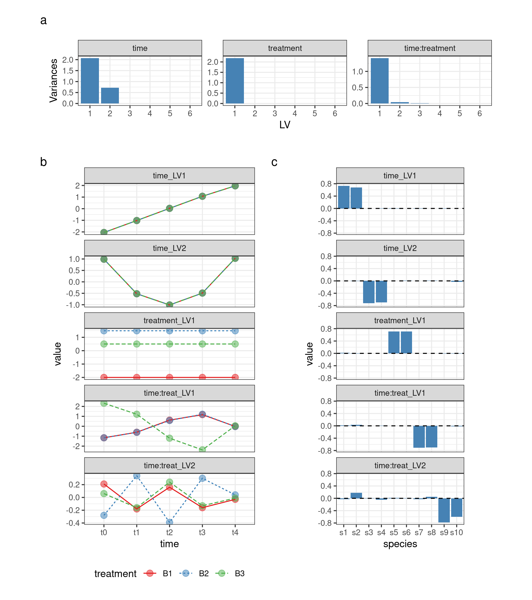
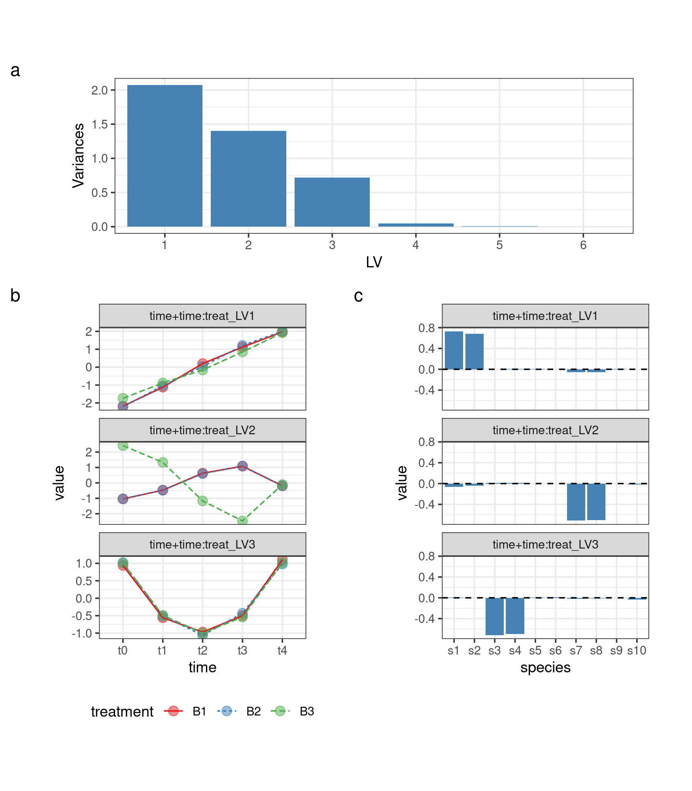

Asca_dec_count_data_tidy.RmdIn the ASCA Decomposition of Synthetic Count Data vignette we showed
how to run and visualize an ASCA decomposition relying on base graphics.
However, visualizations are often performed using tidyverse
and ggplot.
The aim of this article is to show how to visualize the results of an ASCA decomposition using these packages. As in the previous case we will use the synthetic data made available in the package:
## load the libraries
library(gASCA)## Loading required package: parallel## ── Attaching packages ─────────────────────────────────────────────────────────────────────────────────────────────────────────────────── tidyverse 1.3.1 ──
## ✔ ggplot2 3.3.6 ✔ purrr 0.3.4
## ✔ tibble 3.1.7 ✔ dplyr 1.0.9
## ✔ tidyr 1.2.0 ✔ stringr 1.4.0
## ✔ readr 2.1.2 ✔ forcats 0.5.1
## ── Conflicts ────────────────────────────────────────────────────────────────────────────────────────────────────────────────────── tidyverse_conflicts() ──
## ✖ dplyr::filter() masks stats::filter()
## ✖ dplyr::lag() masks stats::lag()
library(patchwork) ## to combine the ggplots in complex figures
library(ggrepel)
## load the dataset
data("synth_count_data")The following plot shows the distribution of the counts for variables
s1 and s7 as a function of the design
factors:
tibble(synth_count_data$design,
data.frame(synth_count_data$counts)) %>%
pivot_longer(starts_with("s")) %>%
filter(name %in% c("s1","s7")) %>%
ggplot() +
geom_point(aes(x = time, y = value, col = treatment),
position = position_jitterdodge(dodge.width = 0.4, jitter.width = 0.05), pch = 19, size =2, alpha = 0.5) +
scale_color_brewer(palette = "Set1", name = "Treatment") +
scale_y_log10() +
facet_wrap(~name, scales = "free") +
xlab("Time") +
theme_bw() +
theme(aspect.ratio = 0.5)## Warning: Transformation introduced infinite values in continuous y-axis
The effect of time on variable s1 is clear. The presence
of an interaction between time and treatment is instead visible in the
s7 profile.
## perform the decomposition
asca0 <- ASCA_decompose(
d = synth_count_data$design,
x = synth_count_data$counts,
f = "time + treatment + time:treatment",
glm_par = list(family = poisson()))The following plot shows the results of the decomposition and the validation in terms of L2 norm of the terms, the variable importance and the univariate pseudo-R2
figure2_term_val <- asca0_validation$L2_qt %>%
as_tibble(rownames = "term") %>%
add_column(actual = asca0$terms_L2) %>%
mutate(term = factor(term, levels = term)) %>%
ggplot() +
geom_col(aes(x = term, y = actual), fill = "steelblue") +
geom_col(aes(x = term, y = value), fill = "darkred") +
ylab("term-L2") + xlab("") +
theme_bw() +
theme(axis.text.x = element_text(size=8),
axis.text.y = element_text(size=8))
figure2_varimp_val <- asca0$varimp %>%
as_tibble(rownames = "var") %>%
pivot_longer(-var) %>%
left_join(asca0_validation$varimp_qt %>%
as_tibble(rownames = "var") %>%
pivot_longer(-var, values_to = "value_qt")) %>%
mutate(var = factor(var, levels = unique(var))) %>%
mutate(name = factor(name, levels = unique(name))) %>%
ggplot() +
geom_col(aes(x = var, y = value), fill = "steelblue") +
geom_col(aes(x = var, y = value_qt), fill = "darkred") +
facet_wrap(~name, scales = "free", nrow = 1) +
ylab("Vecror Norm") + xlab("") +
theme_bw() +
theme(axis.text.x = element_text(size=8, angle = 45, vjust = 1, hjust=1),
axis.text.y = element_text(size=8))## Joining, by = c("var", "name")
figure2_R2_val <- asca0_validation$R2_qt %>%
as_tibble(rownames = "var") %>%
add_column(actual = asca0$pseudoR2) %>%
mutate(var = factor(var, levels = unique(var))) %>%
ggplot() +
geom_col(aes(x = var, y = actual), fill = "steelblue") +
geom_col(aes(x = var, y = value), fill = "darkred") +
ylab("pseudo-R2") + xlab("") +
theme_bw() +
theme(axis.text.x = element_text(size=8),
axis.text.y = element_text(size=8))
## Define the layout
layout <- "
ABB
CCC
"
## prepare the figure
figure2_term_val +
figure2_R2_val +
figure2_varimp_val +
plot_annotation(tag_levels = 'a') +
plot_layout(heights = unit(c(3,4.5),"cm"), widths = unit(c(6,7),"cm"), design = layout)
asca0_svd <- ASCA_svd(ASCA_trim_vars(asca0$decomposition, keep = 1:10))
## here we make a scree plot of the three decomposition terms
screeplot <- map(asca0_svd, ~ .x$sdev %>% as_tibble(., rownames = "PC")) %>%
enframe(name = "term", value = "data") %>%
# mutate(data = map(data,~ .x %>% mutate(value = (value/sum(value))*100))) %>%
unnest(cols = c(data)) %>%
mutate(PC = factor(PC, levels = unique(PC))) %>%
mutate(term = factor(term, levels = c("time","treatment","time:treatment"))) %>%
filter(PC %in% as.character(1:6)) %>%
ggplot() +
geom_col(aes(x = PC, y = value^2), fill = "steelblue") +
facet_wrap(~term, scales = "free", ncol = 3) +
ylab("Variances") +
xlab("LV") +
theme_bw() +
theme(aspect.ratio = 0.4)
LV_plot <- cbind.data.frame(time_LV1 = asca0_svd$time$x[,1],
time_LV2 = asca0_svd$time$x[,2],
treatment_LV1 = asca0_svd$treatment$x[,1],
"time:treat_LV1" = asca0_svd$`time:treatment`$x[,1],
"time:treat_LV2" = asca0_svd$`time:treatment`$x[,2]) %>%
mutate(across(everything(),~round(.x,2))) %>%
add_column(synth_count_data$design) %>%
pivot_longer(contains("LV")) %>%
unique() %>%
mutate(name = factor(name)) %>%
mutate(name = fct_relevel(name, "treatment_LV1", after = 2)) %>%
ggplot() +
geom_point(aes(x = time, y = value, col = treatment), alpha = 0.5, size = 3) +
geom_line(aes(x = time, y = value, col = treatment, group = treatment, lty = treatment)) +
facet_wrap(~name, ncol = 1, scales = "free_y") +
scale_color_brewer(palette = "Set1") +
theme_bw() +
theme(aspect.ratio = 0.3, legend.position = "bottom")
loading_plot <- cbind.data.frame(time_LV1 = asca0_svd$time$rotation[,1],
time_LV2 = asca0_svd$time$rotation[,2],
treatment_LV1 = asca0_svd$treatment$rotation[,1],
"time:treat_LV1" = asca0_svd$`time:treatment`$rotation[,1],
"time:treat_LV2" = asca0_svd$`time:treatment`$rotation[,2]) %>%
add_column(species = paste0("s",1:10)) %>%
mutate(species = factor(species, levels = paste0("s",1:10))) %>%
pivot_longer(contains("LV")) %>%
mutate(name = factor(name)) %>%
mutate(name = fct_relevel(name, "treatment_LV1", after = 2)) %>%
ggplot() +
geom_col(aes(x = species, y = value), fill = "steelblue") +
geom_hline(yintercept = 0, lty = 2) +
facet_wrap(~name, ncol = 1) +
theme_bw() +
theme(aspect.ratio = 0.4)
## Define the layout
layout <- "
AAAA
BBCC
"
## prepare the figure
screeplot +
LV_plot +
loading_plot +
plot_annotation(tag_levels = 'a') +
plot_layout(heights = unit(c(3,13),"cm"), widths = unit(c(4,3),"cm"), design = layout)
The function ASCA_combine_terms allows the combination
of different factor matrices. The function accepts as input the output
of ASCA_decomposition and a character vector specifying
which terms should be combined.
## combine two terms
asca0_comb <- ASCA_combine_terms(asca0, c("time","time:treatment"))
## perform the svd of the combined decomposition
asca0_comb_svd <- ASCA_svd(ASCA_trim_vars(asca0_comb$decomposition, keep = 1:10))
## here we make a scree plot of the three decomposition terms
screeplot_comb <- asca0_comb_svd$`time+time:treatment`$sdev %>%
as_tibble(., rownames = "PC") %>%
mutate(PC = factor(PC, levels = unique(PC))) %>%
filter(PC %in% as.character(1:6)) %>%
ggplot() +
geom_col(aes(x = PC, y = value^2), fill = "steelblue") +
ylab("Variances") +
xlab("LV") +
theme_bw() +
theme(aspect.ratio = 0.3)
LV_plot_comb <- cbind.data.frame("time+time:treat_LV1" = asca0_comb_svd$`time+time:treatment`$x[,1],
"time+time:treat_LV2" = asca0_comb_svd$`time+time:treatment`$x[,2],
"time+time:treat_LV3" = asca0_comb_svd$`time+time:treatment`$x[,3]) %>%
mutate(across(everything(),~round(.x,2))) %>%
add_column(synth_count_data$design) %>%
pivot_longer(contains("LV")) %>%
unique() %>%
mutate(name = factor(name)) %>%
ggplot() +
geom_point(aes(x = time, y = value, col = treatment), alpha = 0.5, size = 3) +
geom_line(aes(x = time, y = value, col = treatment, group = treatment, lty = treatment)) +
facet_wrap(~name, ncol = 1, scales = "free_y") +
scale_color_brewer(palette = "Set1") +
theme_bw() +
theme(aspect.ratio = 0.4, legend.position = "bottom")
loading_plot_comb <- cbind.data.frame("time+time:treat_LV1" = asca0_comb_svd$`time+time:treatment`$rotation[,1],
"time+time:treat_LV2" = asca0_comb_svd$`time+time:treatment`$rotation[,2],
"time+time:treat_LV3" = asca0_comb_svd$`time+time:treatment`$rotation[,3]) %>%
add_column(species = paste0("s",1:10)) %>%
mutate(species = factor(species, levels = paste0("s",1:10))) %>%
pivot_longer(contains("LV")) %>%
mutate(name = factor(name)) %>%
ggplot() +
geom_col(aes(x = species, y = value), fill = "steelblue") +
geom_hline(yintercept = 0, lty = 2) +
facet_wrap(~name, ncol = 1) +
theme_bw() +
theme(aspect.ratio = 0.4)
## Define the layout
layout <- "
AAAA
BBCC
"
## prepare the figure
screeplot_comb +
LV_plot_comb +
loading_plot_comb +
plot_annotation(tag_levels = 'a') +
plot_layout(heights = unit(c(4,8),"cm"), widths = unit(c(3.5,3.5),"cm"), design = layout)